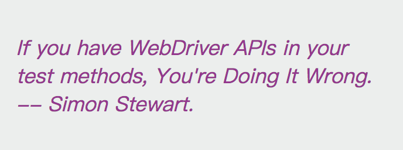

Page Object 模式
為了解決什麼問題？

This reduces the amount of duplicated code and means that if the UI changes, the fix need only be applied in one place. >>> Selenium - Page Object Pattern
減少重複程式碼的數量，當 UI 變動時，只需修改一個地方。範例

圖片來自： Martin Fowler - PageObject
目錄結構
.
├── errorShots
└── test
├── pageobjects
└── specs
test/pageobjects/page.js
function Page () {
this.title = 'My Page';
}
Page.prototype.open = function (path) {
browser.url(path)
}
module.exports = new Page();
test/pageobjects/login.page.js
var Page = require('./page')
var LoginPage = Object.create(Page, {
// 定義元素
username: { get: function () { return browser.element('#username'); } },
password: { get: function () { return browser.element('#password'); } },
form: { get: function () { return browser.element('#login'); } },
flash: { get: function () { return browser.element('#flash'); } },
// override 方法
open: { value: function() {
Page.open.call(this, 'login');
} },
// 自訂方法
submit: { value: function() {
this.form.submitForm();
} }
});
module.exports = LoginPage;
test/specs/login.spec.js
var expect = require('chai').expect;
var LoginPage = require('../pageobjects/login.page');
describe('登入流程', function () {
it('登入成功', function () {
LoginPage.open();
LoginPage.username.setValue('alincode');
LoginPage.password.setValue('12345678');
LoginPage.submit();
expect(LoginPage.flash.getText()).to.contain('恭喜你登入成功了');
});
});
注意事項
- page object 內不應該包含任何驗證 (assertion)